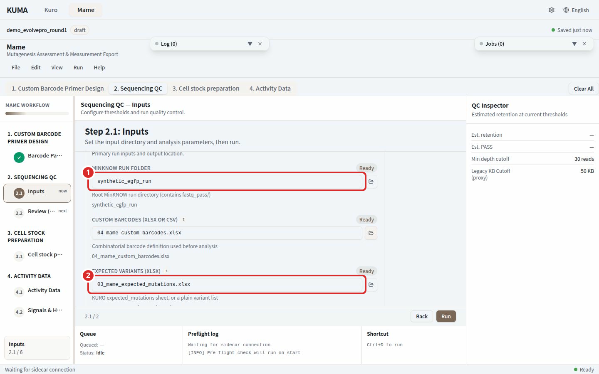
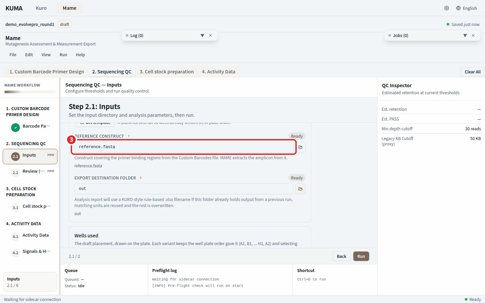
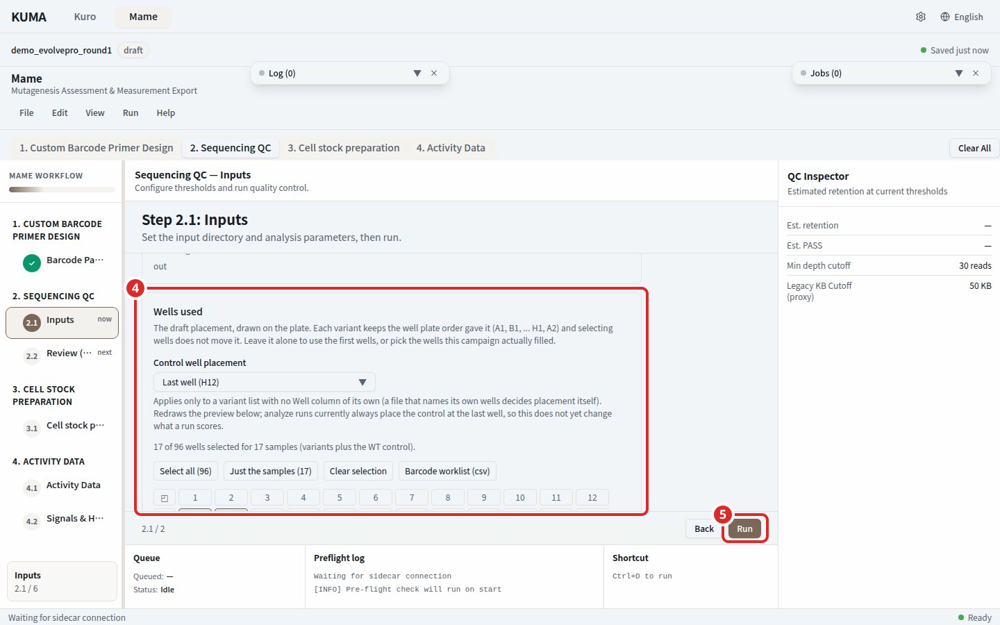
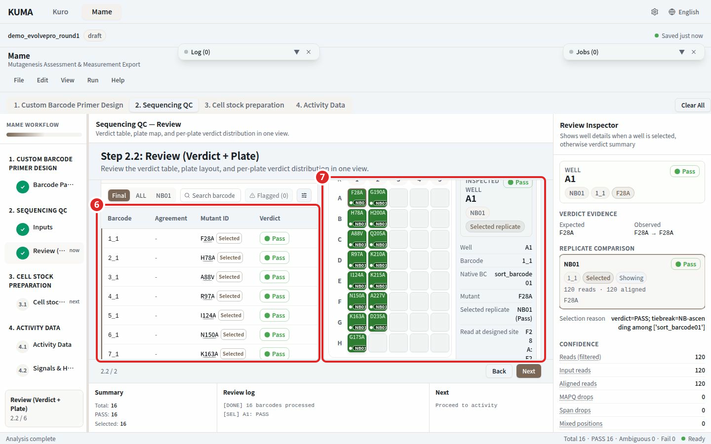
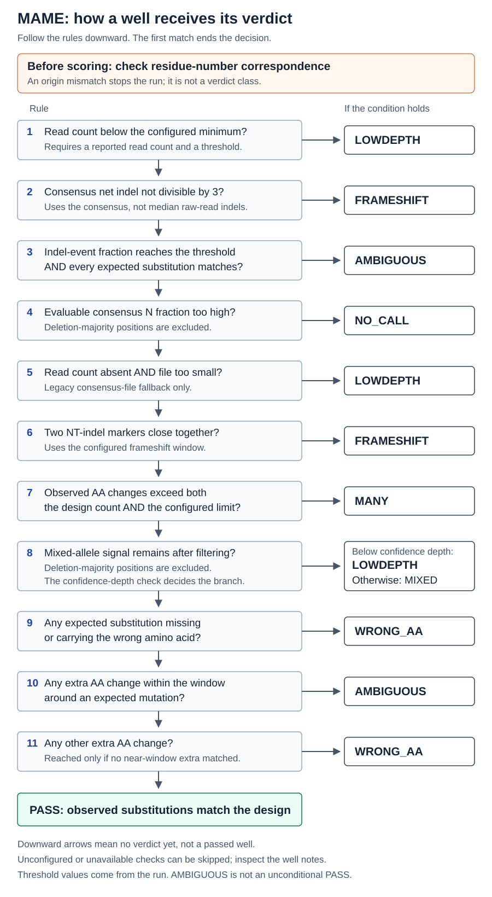

Step 2. Sequencing Review¶

Numbered marks: 1 MinKNOW run folder; 2 Expected variants (xlsx)

Numbered marks: 3 Reference construct

Numbered marks: 4 Wells used; 5 Run

Numbered marks: 6 Verdict table; 7 96-well plate map
Score the sequencing run well by well and read the outcome on a 96-well plate. Pick the inputs in 2.1 and read the verdicts in 2.2.
2.1 Inputs¶
| Input | Required |
|---|---|
| MinKNOW run folder | Required |
| Expected variants (xlsx) | Required |
| Reference construct | Required |
| Wells used | Optional. Left untouched, the leading wells are used |
Choose the inputs, then press Run or Validate. Cell stock preparation is not on this screen. It is step 3.
What MAME reads in the run folder¶
Give the folder MinKNOW wrote, as it is. Sorting reads into barcode folders beforehand isn't needed.
| File | Used for | Required |
|---|---|---|
*.fastq or *.fastq.gz in the barcode folders under fastq_pass/ |
The reads analyzed | Required |
final_summary_*.txt, sample_sheet_*.csv |
Run name and sample information | Read if present |
sequencing_summary*.txt or *.tsv |
Read quality and barcode cross-talk check | Read if present |
pore_activity_*.csv, throughput_*.csv, barcode_alignment*.tsv |
Run health indicators | Read if present |
report_*.json |
Flow cell type and pore counts | Read if present |
Compression doesn't matter. Both *.fastq and *.fastq.gz are read.
If report_*.json isn't in the run folder, MAME looks one level up. When it's absent altogether the pore fields stay blank. Blank is not zero.
pod5/, fast5/, bam_pass/, other_reports/ and report_*.html are never read. Leaving them in place changes nothing.
Wells used¶
The "Wells used" panel draws the computed placement on a plate. Each mutation is fixed to the well that plate order (A1, B1, ... H1, A2) gave it, and clicking a well never moves anything. The selection only states which wells this campaign actually filled.
A well that is not selected is a well the campaign did not fill, so it is not scored. The sample that had been placed there is named in 2.2. Selecting fewer wells than samples is simply a partly filled plate and not a reason for refusal. The only selection refused is an empty one.
The Barcode worklist (csv) button in the same panel saves a file with one row per filled well carrying the well, the sample, the barcode token and the seed primer names. Use it at the bench when pipetting.
Advanced options¶
Four settings sit under Advanced options in the parameter panel.
| On screen | Default | What it changes |
|---|---|---|
| Coverage Fraction | 0.98 | How much of the reference one read must cover to pass. Raise it to keep only complete alignments, lower it to admit partial ones |
| Minimum mapping quality (0–60) | 25 | Reads mapped below this quality are discarded |
| Edit Distance Ratio | 0.25 | How loosely a barcode may match. Smaller is stricter and assigns fewer reads |
| Chimera Split | on | Counts a read spanning several wells as separate hits. Leave it on |
The remaining verdict thresholds can't be changed from the screen.
Changing an input clears the previous output¶
Changing the run folder, the expected variants workbook, the reference construct, the selected wells or an analysis parameter clears the verdicts and plate map the previous run produced, and 2.2 returns to its pre-run state. This keeps the screen of a finished run from looking like the outcome of the new inputs. Picking the same value again does nothing. The output path is not an input, so it clears nothing.
What a run does¶
The stages below are the path for a MinKNOW run folder. The other two modes take a folder of FASTA files that already exist and skip the earlier stages. From stage 2 on, the progress bar shows these names.
- Amplicon extraction. MAME locates where the barcode workbook primers sit in the reference and cuts out the region between them to align against. If it can't locate them, it uses the reference as supplied.
- Aligning. The bundled minimap2 maps the reads in
fastq_passonto the reference. - Coverage filter. Reads with low mapping quality, and reads that don't cover enough of the reference, are dropped.
- Demultiplexing. The barcodes at both ends of each surviving read assign it to one of 96 wells. A read whose barcode on either side can't be resolved, or ties, is dropped.
- Building consensus. For each well the bases at each position are pooled into one sequence by majority vote. Low-quality bases are left out of the vote and positions with too few reads are left as
N. - Analyzing. Each well sequence is compared against the expected mutation and given a verdict.
What a run writes¶
- Per-well consensus sequences, written as
{R}_{F}.fastaunder the barcode folder (sort_barcodeNN/) of the output folder. final/consensus_all_dna.fasta, all wells merged.- The verdict table and plate view on screen.
- The picked clone list
..._picks.csv. - The Excel workbook, written to the output path chosen for the run.
Use a separate output folder for each run. Plate folders an earlier run left behind are excluded from the verdicts and named on screen.
2.2 Review¶
The verdict table sits on the left. The 96-well plate map and the per-plate verdict bar sit on the right. The tabs above the verdict table are Final, ALL, and the native barcodes actually present in this run. Final keeps only the well of the selected replicate for each mutation.
Notices above the verdict table¶
Each notice checks the run that just finished and appears only when its condition holds. Several can appear together, and none appears when there's nothing to report. Notices from an earlier run don't pile up: changing an input clears them with the previous result, and running again decides them afresh from the new result.
- This run cannot be scored The median reads per well is under the floor. The verdicts below come from a plate that never had the depth to be read, so sequence the plate again rather than using them.
- This run is scorable but under-powered Depth clears the floor and falls short of the recommendation. Use the verdicts and check borderline wells separately. Depth is measured only over the wells this run actually scored.
- Mutations at a reference end When the codon of an expected mutation sits near an end of the reference, that mutation is named. An aligner clips reads at that point, so the position can be read shallower than the depth the well reports. Re-run with a reference that includes the region where the primers bind.
- N samples are not on this plate Names the samples and wells left out of the selection. Having no verdict for them in this run is expected. Include them in a later run if they are needed.
- Well-variant mapping likely mismatched Observed mutations match other wells' expected mutations better than their own. It does not block the run. Check the correspondence between the plate you pipetted and the sample names before using the output. Below 24 wells with an observed mutation the sample is too small and no judgment is made.
The flow cell id and pore count appear in the same place. They are reference values and no pass line is set on them.
Opening the evidence behind a verdict¶
- Replicate rows: the replicate list in the verdict detail is made of buttons. Pressing a row selects that plate replicate, and the detail, the plate highlight and the verdict table follow it.
- Confidence metrics: pressing a metric name shows what the value counts, at which pipeline stage it is counted, and whether it can move the verdict. The threshold this run compared against is shown too. Seven of the ten metrics are diagnostic and change no verdict.
- Verdict legend: hovering a class in the plate map legend or in the per-plate verdict bar shows what that class means, including classes with no wells.
Verdict classes¶

A well gets its verdict from the checks below, in order, and the first one that holds decides. Moving on to the next check means no verdict yet, not a pass.
- Read count below the configured minimum: Low depth.
- Net consensus indel length not a multiple of 3: Frameshift.
- Indel signal at or above the threshold while every expected substitution matches: Ambiguous.
- Too high a fraction of N among the positions that can be judged: No call.
- No read count reported and the consensus file too small: Low depth.
- Two nucleotide indel markers close together within the frameshift window: Frameshift.
- More amino-acid changes than both the design count and the configured limit: Many.
- A mixed-allele signal remains: Mixed, or Low depth when the well's read count is below the confidence depth.
- An expected substitution missing or carrying the wrong amino acid: Wrong AA.
- An extra amino-acid change within the window around an expected site: Ambiguous.
- Any other extra amino-acid change: Wrong AA.
A well that meets none of these is Pass. Checks that are not configured or cannot run are skipped, so when a verdict looks wrong, open that well's details as well.
| Verdict | Meaning |
|---|---|
| Pass | Observed amino-acid changes exactly match the expected design |
| Ambiguous | All expected mutations matched, and either an extra AA change sits within the indel window of an expected site or the reads carry an indel-event signal at or above the threshold (this can mark a WT control too). Still counts as detected |
| Mixed | Within-well contamination: a substantial second allele in the consensus signal |
| Wrong AA | An expected site shows a different amino acid, an expected mutation is missing, or an unexpected extra change sits outside the window while none sits inside it |
| Frameshift | The consensus carries a net insertion or deletion whose length is not a multiple of 3, so the reading frame is shifted |
| Many | More observed AA changes than both the design and the many-mutation cutoff |
| Low depth | Too few reads to call this well reliably |
| No call | Consensus has too many ambiguous (N) positions to trust the amino-acid calls |
Runs with no verdicts, heavy loss at the coverage filter and other common problems are answered in the FAQ.
→ Step 3. Cell stock preparation is optional. Stop here if only a sequencing verdict is needed.
→ Step 4. Activity Data filters activity measurements by these verdicts to build the EVOLVEpro input.